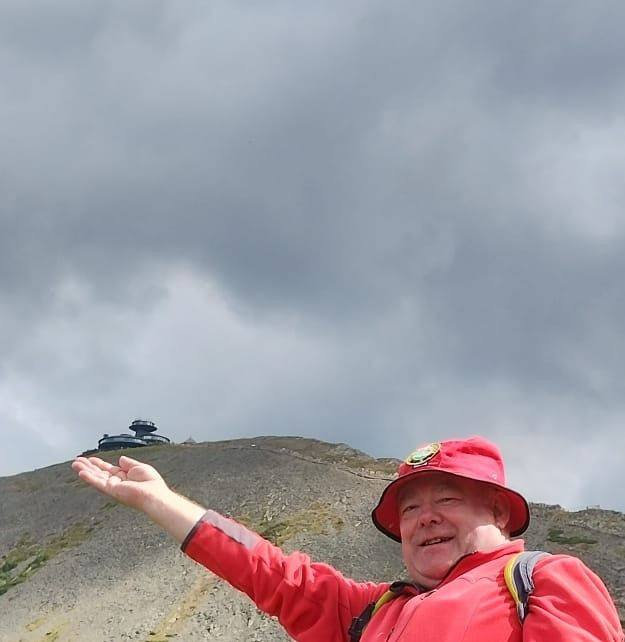

Propozycje wycieczek z przewodnikiem
Przedstawiam kilka propozycji pieszych wycieczek po Sudetach, idealnych zarówno dla rodzin z dziećmi, grup szkolnych, jak i miłośników górskich wędrówek.
Wycieczki po Sudetach
Śnieżka i Karkonoski Park Narodowy
Wyprawa na najwyższy szczyt Karkonoszy – Śnieżkę. Po drodze zobaczymy m.in. schronisko Samotnia, Mały Staw i Kaplicę św. Wawrzyńca. Idealna trasa dla aktywnych.
Dowiedz się więcej
Góry Stołowe i Błędne Skały
Zwiedzanie labiryntu skalnego w Parku Narodowym Gór Stołowych. W programie: Błędne Skały, Szczeliniec Wielki i malownicze punkty widokowe.
Dowiedz się więcej
Zamek Czocha i spacer nad Kwisą
Wycieczka do jednego z najbardziej tajemniczych zamków Dolnego Śląska. W programie zwiedzanie wnętrz, historii oraz spacer brzegiem rzeki.
Dowiedz się więcej
